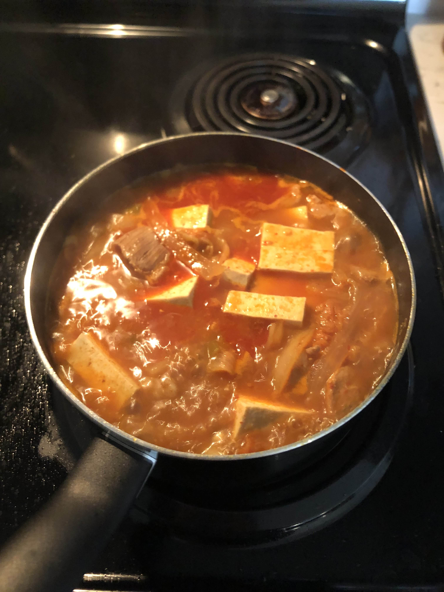

Home
Kimchi Pork Stew (김치찌개)

Famous Korean dish: Kimchi-jjigae or kimchi pork stew.
Ingredients
- 400g of Kimchi
- 300g of pork
- Half a block of tofu
- 500 mL of beef bone broth
- 3 spoons of red chili powder
- 3 spoons of anchovy oil
- 1 spoon of garlic puree
- 1 spoon of soybean paste
- Half a stalk of green onion
- 2 diced serrano peppers
- 360 mL of water
Steps
- Add all the ingredients into a massive pot
- Boil until pork is cooked and edible